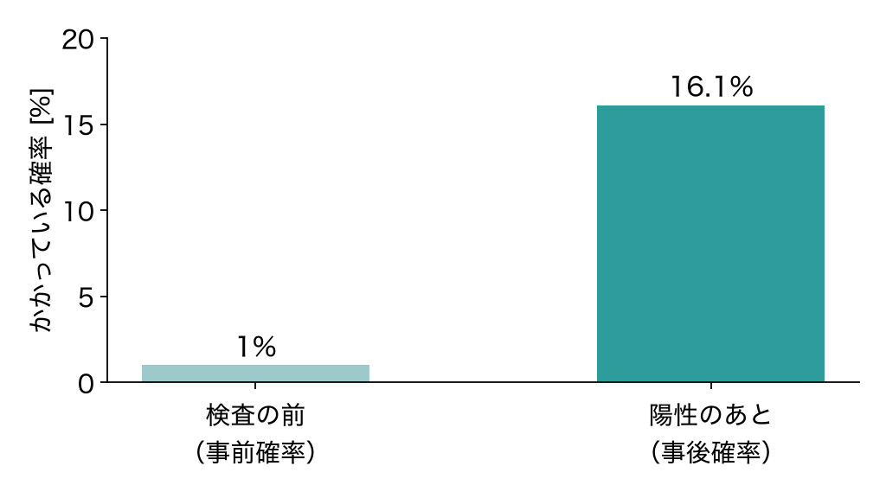

ベイズの定理の入門
第 3 回 勉強会
Example Study Group
Example Study Group
用語の整理
まず，3 つの確率の名前を押さえておきます
| 名前 | 記号 | 意味 |
|---|---|---|
| 事前確率 | $P(A)$ | 観測する前の確からしさ |
| 尤度 | $P(B \mid A)$ | A のときに B が観測される確率 |
| 事後確率 | $P(A \mid B)$ | B を観測した後の確からしさ |
ベイズの定理
事後確率は，尤度と事前確率の積に比例します
$\displaystyle P(A \mid B) = \frac{P(B \mid A)\, P(A)}{P(B)}$(1)
- 分母の $P(B)$ は，すべての場合を足し合わせて求めます
- $P(B) = \sum_{i} P(B \mid A_i)\, P(A_i)$
- 候補どうしを比べるだけなら，分母は計算しなくてかまいません
例題: 検査の陽性
陽性でも，本当にかかっている確率は約 16% です
- かかっている人の割合：1%
- かかっていれば陽性：95%
- かかっていなくても陽性：5%
$\displaystyle \frac{0.95 \times 0.01}{0.95 \times 0.01 + 0.05 \times 0.99} \approx 0.16$

今日のまとめ
観測のたびに，事前確率を事後確率へ更新します
- 式 (1) の 3 つの確率の名前と意味
- よくある間違い：「陽性なら 95% でかかっている」と読んでしまう
- 95% は尤度 $P(B \mid A)$ で，知りたいのは事後確率 $P(A \mid B)$
- 次回までに：教科書の 2.3 節を読む